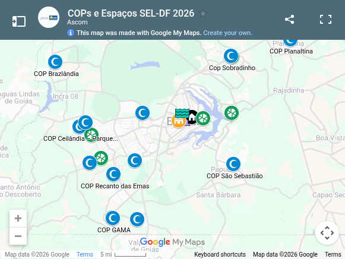

Atletas e paratletas1.773
1º semestre de 2024
 GDF
GDF
Programas, espaços e resultados
em um só lugar.

1º semestre de 2024
Transporte aéreo e terrestre
Dados históricos
Serviços e oportunidades
Institucional
Órgão responsável por formular, coordenar, executar e promover políticas públicas voltadas para o desenvolvimento e incentivo do esporte na região.
Setor Bancário Norte — SBN, Quadra 2, Bloco K, Edifício Wagner, 1º andar, Brasília–DF.